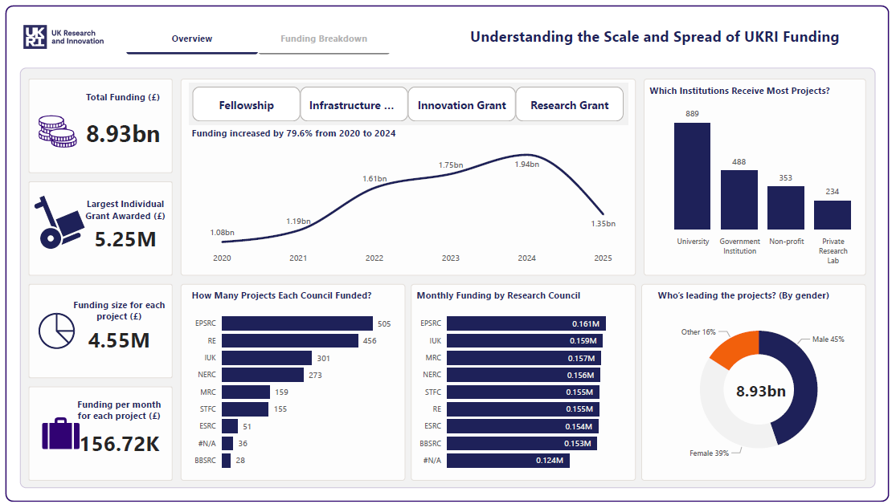

Projects

TrinityBridge Fee Performance & Income Dashboard
Designed a detailed financial dashboard analyzing £1.55bn AUM across portfolios. It provided insights on fee variance, income loss from zero-fee accounts, and manager-level fee performance, supporting strategic revenue optimization.

UKRI Funding Distribution & Project Insights
Built a Power BI report for analyzing £8.93bn in UK Research and Innovation (UKRI) funding across institutions and project types. It includes breakdowns by region, council, institution type, and project status.

Bupa Risk & Complaints Analysis Dashboard
Developed a Power BI dashboard to monitor risk assessments, complaint trends, and policy cancellations. This visual tool helped stakeholders track key metrics and drive data-informed decisions across customer service and compliance teams.